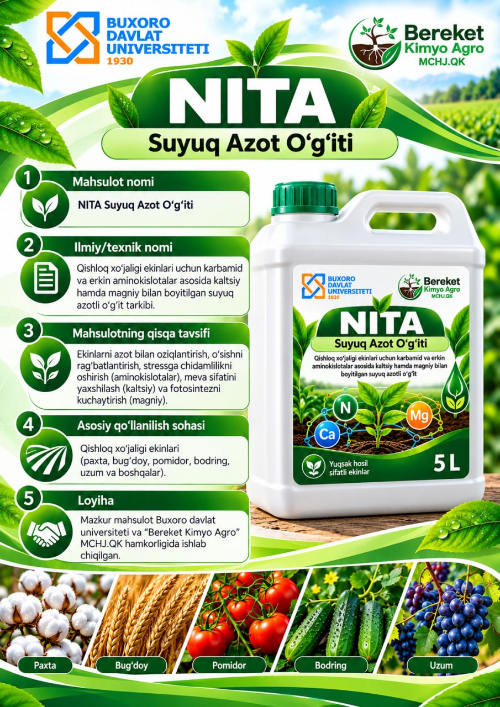

Paxta
Paxta ekinlarida oziqlantirish dasturlari uchun.
Karbamid va erkin aminokislotalar asosida, kalsiy hamda magniy bilan boyitilgan suyuq azotli o‘g‘it loyihasi.

NITA suyuq azotli o‘g‘iti Buxoro davlat universiteti va “Bereket Kimyo Agro” MCHJ.QK hamkorligida ishlab chiqilgan loyiha sifatida taqdim etiladi.
Qishloq xo‘jaligi ekinlari uchun karbamid va erkin aminokislotalar asosida, kalsiy hamda magniy bilan boyitilgan suyuq azotli o‘g‘it tarkibi.
Loyiha tavsifiga ko‘ra, mahsulot ekinlarni azot bilan oziqlantirish, o‘sishni rag‘batlantirish, aminokislotalar orqali stressga chidamlilikni qo‘llab-quvvatlash, kalsiy orqali meva sifatiga, magniy orqali fotosintez jarayoniga ko‘maklashish uchun mo‘ljallangan. Natijalar ekin turi, qo‘llash me’yori va sharoitlariga bog‘liq.
Posterda quyidagi ekin turlari ko‘rsatilgan. Qo‘llashdan oldin mahsulot yorlig‘i va ishlab chiqaruvchi tavsiyasidagi me’yorlarga amal qiling.
Paxta ekinlarida oziqlantirish dasturlari uchun.
Bug‘doy ekinlarida oziqlantirish dasturlari uchun.
Sabzavot ekinlari, jumladan pomidor uchun.
Sabzavot ekinlari, jumladan bodring uchun.
Loyiha Buxoro davlat universiteti va “Bereket Kimyo Agro” MCHJ.QK hamkorligi asosida ishlab chiqilgan.
Ilmiy va innovatsion hamkor.
Mahsulot loyihasidagi hamkor tashkilot.
Eslatma: ushbu sahifadagi ma’lumotlar loyiha posteriga asoslangan. O‘g‘itning tarkibi, sertifikatlari, qo‘llash me’yorlari va samaradorligi bo‘yicha rasmiy texnik hujjatlar hamda ishlab chiqaruvchi ko‘rsatmalariga amal qiling.
Mahsulot va hamkorlik bo‘yicha ma’lumot olish uchun telefon qiling.